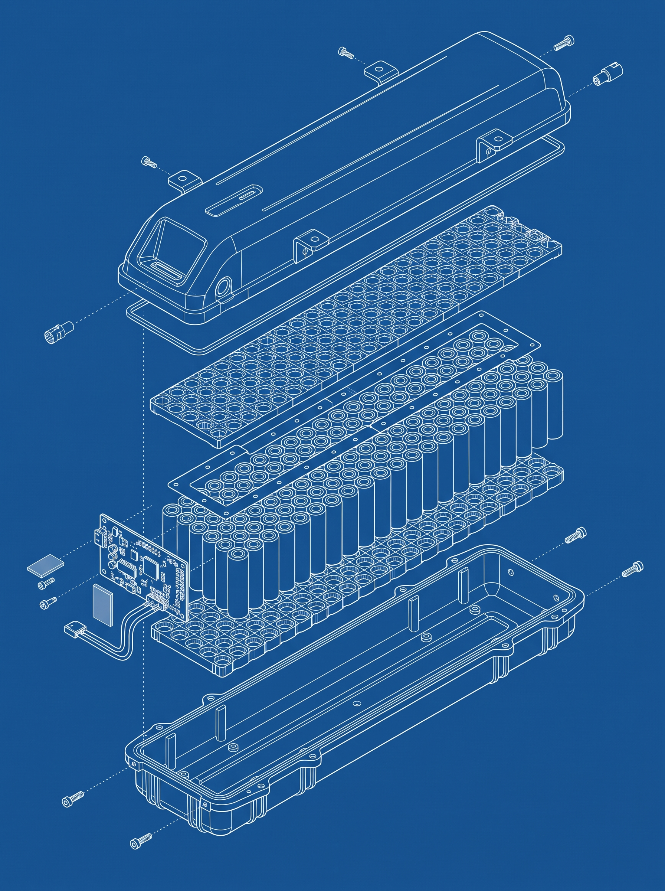

Este documento contiene información técnica confidencial. Las operaciones descritas solo deben ser realizadas por talleres homologados o recicladores certificados en cumplimiento con el Reglamento (UE) 2023/1542.
| Arquitectura de Celdas | 10S4P · 40 celdas cilíndricas 21700 |
|---|---|
| Química | NMC 811 (Litio, Níquel, Cobalto) |
| Voltaje y Capacidad | 36V Nominal · 17.36 Ah (625 Wh) |
| Sistema de Gestión (BMS) | IberiaVolt Smart-BMS v2 (Telemetría integrada) |
Los recambios deben ser solicitados exclusivamente a través de los canales B2B autorizados utilizando el Identificador de Producto (BAT-2026-8841).
A continuación se detalla la disposición interna del bloque de celdas (10S4P), la placa de gestión térmica y la unidad BMS superior. Extraiga el conjunto verticalmente sin someterlo a torsión mecánica.

Durante la manipulación del bloque interno, utilice exclusivamente herramientas aisladas (Clase 0 / 1000V). El electrolito (LiPF6 en carbonatos orgánicos) es altamente inflamable; disponga siempre de agente extintor Clase D o Agua nebulizada (F-500) en la estación de trabajo.